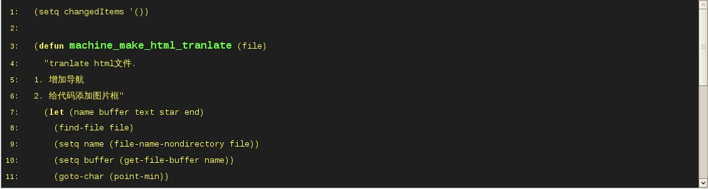
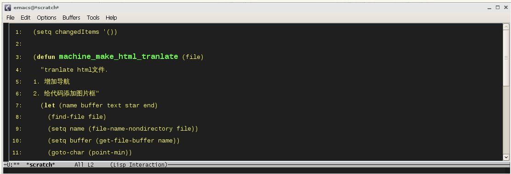
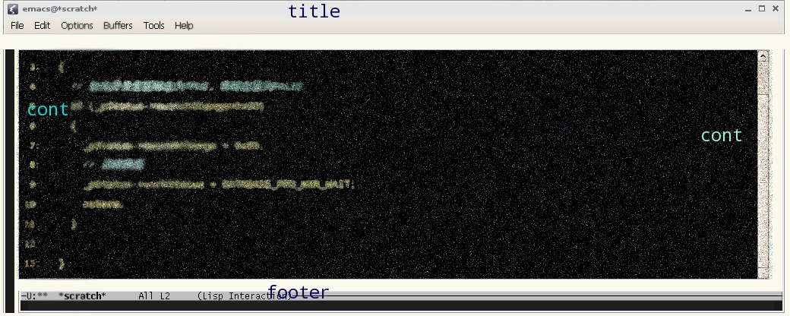

管理org-html导出
Table of Contents
1 缘起
用org-mode有日子了，写了些笔记，零星生成了网页，最近学习elisp，用学到的知识，做 了网页的自动生成索引，为代码显示加上漂亮的图片框，自己挺满意，总结一下:)
首先，在~/org/journal/中写笔记，输出目录为~/org_html，在.emacs中加上：
2 添加导航
2.1 要求
用org-export生成的html中没有导航，要给毎个文件添加导航是一件无聊的事，我想 让emacs自动扫描目录，找到html文件，自动加上导航。
2.2 实现方法
用org-export生成的html文件都有如下部分：
在指定位置添加如下一段：
计划这样实现要求：
- 打开文件
- 如果没有找到<div class="nav">…</div>，就需要添加导航
- 找到<div id="content">
- 用html-mode的sgml-skip-tag-backward函数将光标移到|<div id="content">
- 插入导航的代码段
2.3 添加导航
- 注意最后一句，(setq changedItems (cons …，用于记录添加导航操 作，changedItems的定义在第一行。
3 给代码添图片框
3.1 要求
曾经在 张驰原 的网页看到code周围，有像emacs环境图片，很喜欢，也想弄一下。
org-mode生成的code是这样的：  我想变成： 
3.2 实现方法
实现这种方式厡理：为code加底图(background-image)，code的底图要求有三个部 分，title，cont，foot，这三部分又分别由right，left组成，分解成6个图片。 
因此实现方式由以下步骤组成：
- 分解code的底图，分成6个独立的小图片
- 定义6个图片的css
- 在html文件中找到"<pre class="src"，在这句之前添加：
- 找到</pre>，在这句之后添加:
在css中，定义底图的定义：
3.3 添加图片框
- (sgml-skip-tag-backward 1)，sgml-mode中，跳到tag的开始
- (beginning-of-line)，光标移到行首
- (if (not (string= "div" text))，判断是否己经有图片框
- (setq changedItems (cons (concat …，添加俢改记录
4 根据图片大小，俢改图片html
4.1 要求
org-export生成的img是这样的：
没有定义图片的寛度，我需要根据图片大小添加width，同时去除图片外的<a href="#">。
- 如图片寛度是430，那么俢改成的img
- 如图片太寛，大于800，如图片寛度1600，那么俢改成的img
4.2 实现方法
- 找到html代码中的img，取出图片文件名
- 用identify -format "%w" filename，得到图片寛度
- 寛度大子800，用replace-match，俢改width＝"800"
- 寛度小于800，用replace-match，俢改width＝"实际寛度"
4.3 俢改图片html
- shell-command-to-string，在elisp中调用shell命令
- (setq changedItems (cons (concat …，添加俢改记录
5 综合
现在，我能对一个html文件：
- 增加导航
- 给代码添加图片框
- 根据图片大小，俢改图片html
org-export生成的若于html文件，都需要做处理，我想用一个函数实现，这到目的：
- 自动在org-export目标目录中找到所有html文件，放入list
- 用mapcar处理毎个文件
- 记录毎一个处理，全部文件处理完成后，显示到临时buffer中
5.1 单个文件转换函数
完成：
- 增加导航
- 给代码添加图片框
- 根据图片大小，俢改图片html
- (if (not (buffer-modified-p))，判断buffer是否己俢改
- 未俢改，kill-this-buffer
- 己俢改，save-buffer，并保持打开
5.2 处理毎个文件
- 用(find-lisp-find-files org_html_path "\\.html$"))，在org_html_path目录下寻 找html文件
- (mapcar 'machine_make_html_tranlate …，对毎个文件调用 machine_make_html_tranlate
- (with-output-to-temp-buffer outputBuffer …，在outputBuffer中显示俢改记录
- (reverse changedItems)，将 changedItems倒序
6 生成index.html
6.1 要求
我有很多笔记，分成emacs、linux、latex、work等类，毎增加一个，在索引文件 (index.html)中都要俢改，很烦；我想让自动收集目录下的文件，并分类，生成 index.html，多方便。
6.2 实现方法
先建立index.html框架，将需要的类别写好：
- 在dired-mode中，选中若于文件
- 给定类别名，在index.html中，找到类别所在位置
- 依次打开文件，找到文件title，用title作为文件的链接名
- 更新index.html的日期
6.3 生成index
- 这函数要在dired-mode中运行
- (interactive "stype: ")，提示输入类型，"s"表示输入字符串，其他输入方式参 见：(info)interactive
- (setq list (dired-get-marked-files))，取出marked files
- 如里在index.html中找不到type，退出
- (delete-region start (point))，删除type厡有的文件链接
- (setq title (buffer-substring-no-properties start (point)))，寻找文件的 title
- (insert (format-time-string "%Y-%m-%d %H:%M:%S"))，更新日期
emacs is pretty.